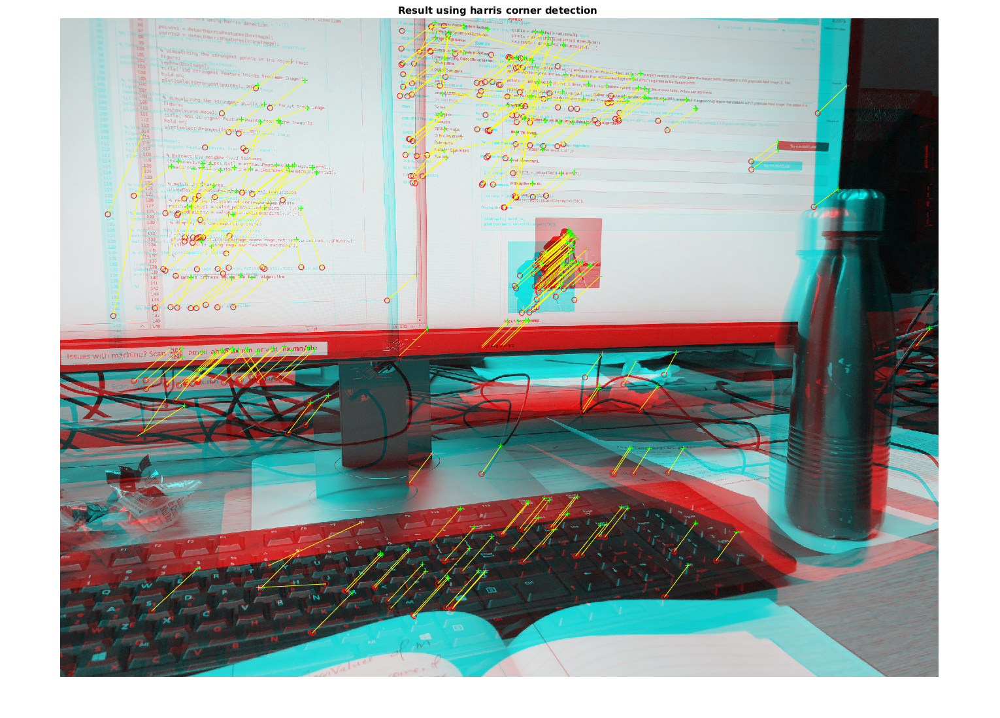
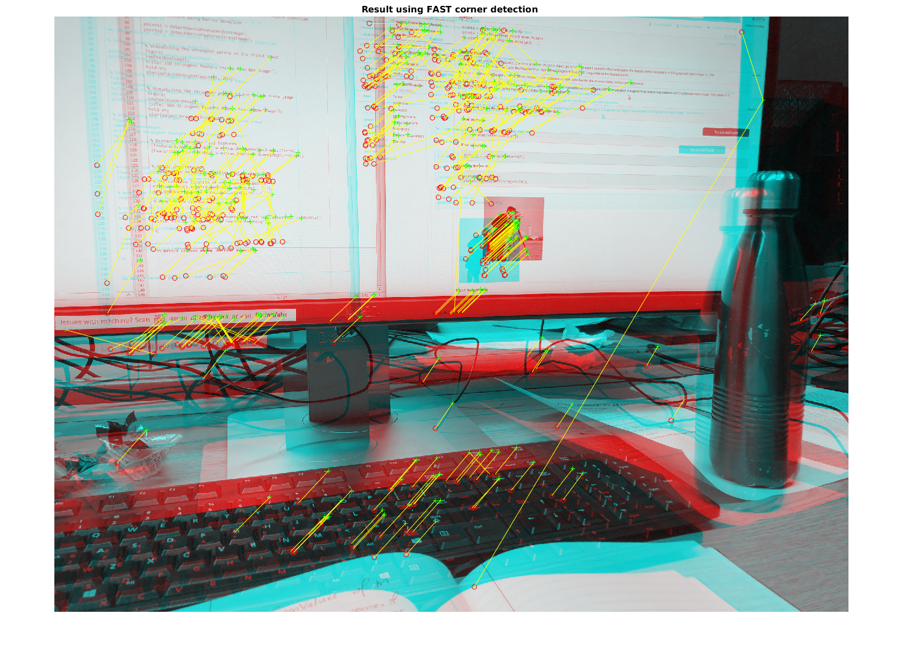
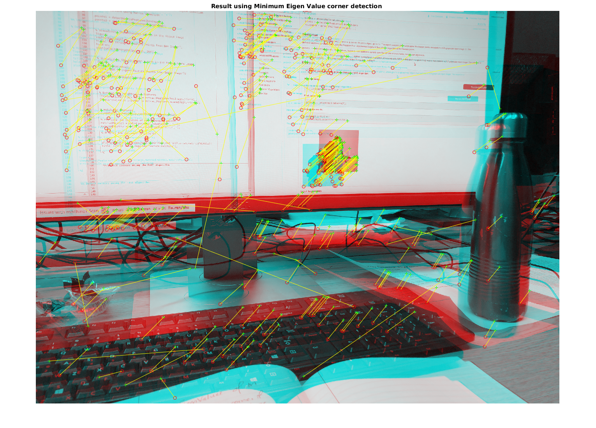

Contents
Initial preprocessing
Detect corners using harris detection
clc; clear; close all; % Read the object image I1 = imread('img1.JPG'); I1 = rgb2gray(I1); %figure; %imshow(I1); %title('Image1'); % Read the scene image I2 = imread('img2.JPG'); I2 = rgb2gray(I2); %figure; %imshow(I2); %title('Image2');
Implemntation using Harris corner detection for feature detection
pointsHarr1 = detectHarrisFeatures(I1); pointsHarr2 = detectHarrisFeatures(I2); % Extract the neighborhood features [featuresH1,valid_pointsH1] = extractFeatures(I1,pointsHarr1); [featuresH2,valid_pointsH2] = extractFeatures(I2,pointsHarr2); % match the features indexPairsHarris = matchFeatures(featuresH1,featuresH2); % retrieve the location of corresponding points matchedPointsHarr1 = valid_pointsH1(indexPairsHarris(:,1),:); matchedPointsHarr2 = valid_pointsH2(indexPairsHarris(:,2),:); fprintf('Number of detected points for first image using Harris = %d\n',valid_pointsH1.Count); fprintf('Number of detected points for second image using Harris = %d\n',valid_pointsH2.Count); % Extract the neighborhood features [features1,valid_points1] = extractFeatures(I1,pointsHarr1); [features2,valid_points2] = extractFeatures(I2,pointsHarr2); % match the features indexPairs = matchFeatures(features1,features2); % retrieve the location of corresponding points matchedPoints1 = valid_points1(indexPairs(:,1),:); matchedPoints2 = valid_points2(indexPairs(:,2),:); fprintf('Number of matching features for first image using Harris = %d\n',matchedPoints1.Count); fprintf('Number of matching features for second image using Harris = %d\n',matchedPoints2.Count); % display the corresponding points figure; showMatchedFeatures(I1,I2,matchedPoints1,matchedPoints2); title('Result using harris corner detection ');
Number of detected points for first image using Harris = 10377 Number of detected points for second image using Harris = 9336 Number of matching features for first image using Harris = 285 Number of matching features for second image using Harris = 285 Warning: Image is too big to fit on screen; displaying at 33%
Implemntation using FAST corner detection
pointsFAST1 = detectFASTFeatures(I1); pointsFAST2 = detectFASTFeatures(I2); % Extract the neighborhood features [featuresF1,valid_pointsF1] = extractFeatures(I1,pointsFAST1); [featuresF2,valid_pointsF2] = extractFeatures(I2,pointsFAST2); fprintf('Number of detected points for first image using FAST = %d\n',valid_pointsF1.Count); fprintf('Number of detected points for second image using FAST = %d\n',valid_pointsF2.Count); % match the features indexPairsF = matchFeatures(featuresF1,featuresF2); % retrieve the location of corresponding points matchedPointsF1 = valid_pointsF1(indexPairsF(:,1),:); matchedPointsF2 = valid_pointsF2(indexPairsF(:,2),:); fprintf('Number of matching features for first image using FAST = %d\n',matchedPointsF1.Count); fprintf('Number of matching features for second image using FAST = %d\n',matchedPointsF2.Count); % display the corresponding points figure; showMatchedFeatures(I1,I2,matchedPointsF1,matchedPointsF2); title('Result using FAST corner detection ');
Number of detected points for first image using FAST = 8020 Number of detected points for second image using FAST = 10140 Number of matching features for first image using FAST = 434 Number of matching features for second image using FAST = 434 Warning: Image is too big to fit on screen; displaying at 33%
Implementation using minimum eigen features detection
pointsMinEig1 = detectMinEigenFeatures(I1); pointsMinEig2 = detectMinEigenFeatures(I2); % Extract the neighborhood features [featuresME1,valid_pointsME1] = extractFeatures(I1,pointsMinEig1); [featuresME2,valid_pointsME2] = extractFeatures(I2,pointsMinEig2); fprintf('Number of detected points for first image using Minimum Eigen Value = %d\n',valid_pointsME1.Count); fprintf('Number of detected points for second image using Minimum Eigen Value = %d\n',valid_pointsME2.Count); % match the features indexPairsME = matchFeatures(featuresME1,featuresME2); % retrieve the location of corresponding points matchedPointsME1 = valid_pointsME1(indexPairsME(:,1),:); matchedPointsME2 = valid_pointsME2(indexPairsME(:,2),:); fprintf('Number of matching features for first image using Minimum Eigen Value = %d\n',matchedPointsME1.Count); fprintf('Number of matching features for second image using Minimum Eigen Value = %d\n',matchedPointsME2.Count); % display the corresponding points figure; showMatchedFeatures(I1,I2,matchedPointsME1,matchedPointsME2); title('Result using Minimum Eigen Value corner detection ');
Number of detected points for first image using Minimum Eigen Value = 41421 Number of detected points for second image using Minimum Eigen Value = 33037 Number of matching features for first image using Minimum Eigen Value = 371 Number of matching features for second image using Minimum Eigen Value = 371 Warning: Image is too big to fit on screen; displaying at 33%